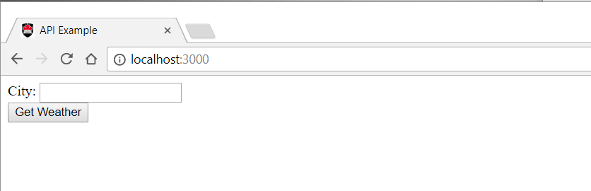
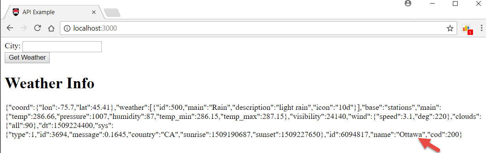
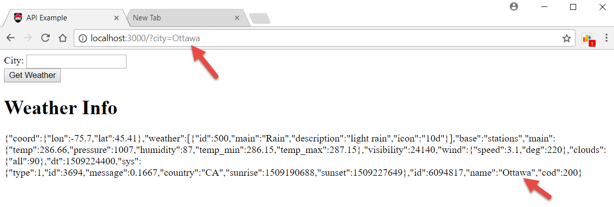
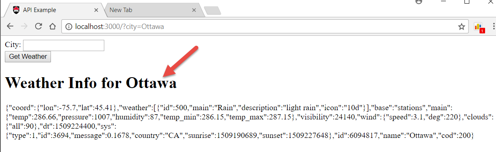
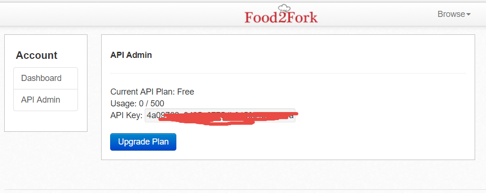
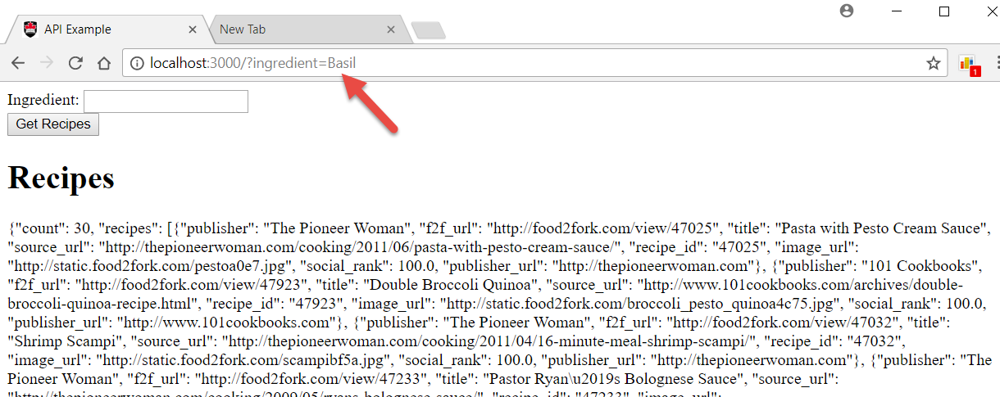

COMP 2406 - Fall 2017 Tutorial #6
Food2Fork -Introducing RESTful API's
© Muhammad Awais Qureshi and L.D. Nel 2017
Revisions will be noted here
Description:
With this tutorial we introduce using RESTful API servers, or services. Many servers now provide an API that lets you query them for data. They provide JSON or XML data rather than providing a webpage as a response. This is because many websites now have javascript that asynchronously updates page contents and thus query servers through their API (application programming interface) expecting JSON data rather than a new html web page to load.
This tutorial is based on work done by our TA Muhammad Awais Qureshi as part of his 4905 honours project. This work will form the basis of our Assignment #3 in the course. Thanks Muhammad!
IMPORTANT: To do this tutorial you will need to sign up at www.food2fork.com to get an app id. This id will have to be pasted into your code in order to connect with their API server.
IMPORTANT: This tutorial is meant to be started as a homework assignment and for you to demonstrate your results at your tutorial session. You will not be able to complete it if you only start when you come to the tutorial.
To get credit for the tutorial you must complete, or make significant progress on, the exercise problems provided and demonstrate your results to the tutorial TA before you leave the tutorial.
Instructions:
Demo)
Open the the demo_code folder and run the server weather weather_server.js found there. To test the server open a browser to http://localhost:3000. You should see a browser application that looks like the following.

Type "Ottawa" into the textfield and click the Get Weather button. You should see weather conditions for Ottawa as a result. (Go ahead and try other cities as well.)

Open the server weather_server.js code in your favourite code editor and examine the code.
Observe the following:
1) The code uses, or requires, the querystring built-in node module to help parse the query parameters in the POST request.
2) The server code makes an HTTP GET request to another server hosted by api.openweathermap.org. This is done in the following function:
function getWeather(city, res){
//New as of 2015: you need to provide an appid with your request.
//Many API services now require that clients register for an app id.
//Make an HTTP GET request to the openweathermap API
let options = {
host: 'api.openweathermap.org',
path: '/data/2.5/weather?q=' + city +
'&appid=' + API_KEY
}
http.request(options, function(apiResponse){
parseWeather(apiResponse, res)
}).end()
}
Notice this function accesses another server on the internet through its (RESTful) API. (Don't worry about what "RESTful" means at this point.). Notice also that the code is required to provide an app ID key. Many API's have sprung up over recent years and starting around 2015 may require that you sign up and use the app id key they provide when accessing their services.
Notice this function does an http (GET) request to the weather server and then provides its own client with the JSON data that the API returns.
Study the entire code for our weather server and then proceed with the tutorial exercise questions.
Problem 1)
Notice our demo code serves HTML content to the browser, not by reading a file but, by constructing an html web page which consists of html tags and some of the data obtained from the weather service. This idea of combining html tags with data is called "templating" and there are "template engines" like JADE, Handlebars, PUG etc. made to help with this. We won't concern ouselves with those here.
Notice that the server effectively serves an html form to the client which is set up to send an HTTP POST request when the user clicks the Get Weather button, or hits the ENTER key.
Also notice the form data is made accessible as a javascript object by using the querystring module to parse the query data.
For this problem we want to allow the user to use a GET request as well by, for example, accessing http://localhost:3000/?city=Ottawa with the browser. This should provide the server response as before but with the weather data for Ottawa included:

To do this you need to add a new route (if-statement) that detects a GET request and then use the querystring module to parse the data to obtain the city. Use the existing code for clues on how to do this. Read up on how to use the querystring module if necessary. Basically the querystring module's parse method turns the query parameters (items specified with the ?city=Ottawa syntax in a URL into a javascript object where you can access the parameter with syntax like object.city for example.
With this completed you can query the weather by either typing a city name in the text field or by using the brower address text field.
Problem 2)
For this problem we want you to display the city name as part of the "Weather Info" heading in the web page. That is, in the sendResponse() function of the server we want you to include the name of the city so the user sees the following in their browser:

Problem 3)
With problem 1 and 2 as a warm up, we want you to take the server code and modify it as necessary to obtain recipe information from the www.food2fork.com recipe API service instead of weather information. For this you will need to sign up with the service and obtain an app ID from them.
Here is a screen capture of me viewing my API key after signing up for the free service:

This time instead of a getWeather() function you will need a getRecipes() function that looks like the following:
function getRecipes(ingredient, res){
//You need to provide an appid with your request.
//Many API services now require that clients register for an app id.
const options = {
host: 'www.food2fork.com',
path: `/api/search?q=${ingredient}&key=${API_KEY}`
}
http.request(options, function(apiResponse){
parseData(apiResponse, res)
}).end()
}
Notice this function expects you to pass it an ingredient, like "Basil", instead of a city.
Make all the changes needed to implement a fork2fork.js server instead of a weather_server.js.
When completed the user should be able to ask for recipes that include a particular ingredient (or ingredients separated by a comma) using either the text field or query parameters in the URL address:

When you have completed the above questions demonstrate your work to the TA's to get credit for the tutorial.
Optional Challenge Problems)
1) In creating a recipe server you might have changed a bunch of code that say's "weather" into "recipe" instead. Create a version of the code that is more generic -that does not say "weather" or "recipe" but rather just refers to "api" or something like that.
2) Since the client web page runs javascript it should be possible for the client to directly request data from the food2fork api server. Create a version of the code where the client does not request recipe data from our server but directly from the food2fork sever using it's client-side javascript.